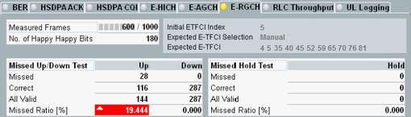

E-RGCH Tab
The tab shows the measurement results and the connection status.
The connection status information displayed at the bottom is the same as in the WCDMA signaling main view, see "Connection Status".
The most important settings of the WCDMA signaling application can be accessed via the "Signaling Parameter" softkey and the related hotkeys.
To switch to the signaling application, press the "WCDMA-UE Signaling" softkey two times.
The "Config" hotkey opens either the configuration dialog of the measurement or the configuration dialog of the signaling application, depending on which softkey is active.

For a description of the results, see "E-RGCH Measurement".
Remote command: